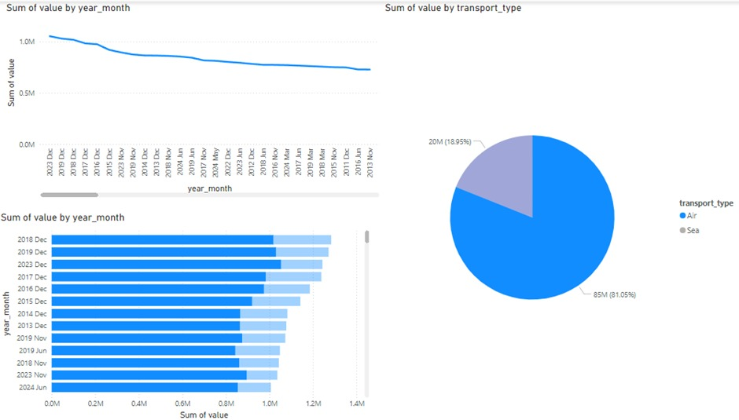
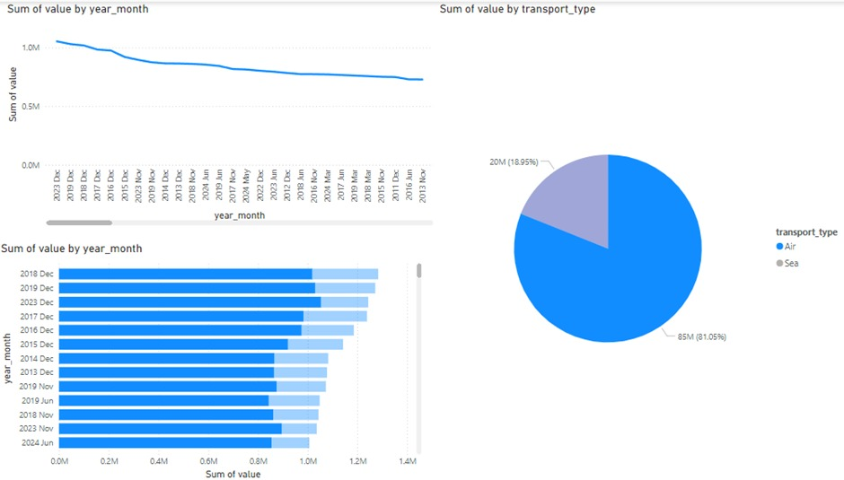

ETL automation
A Step Function is created to automate the entire ETL pipeline, starting with a Lambda that ingests SingStat data, stores it in S3, and sends a success/failure email through SNS with metadata like dataset ID & number of keys.
It then calls another Lambda to flatten the nested JSON into a table format. A flexible/dynamic cleaning Lambda follows, allowing user-defined options like removing duplicates, filling missing values, or filtering rows. Depending on the dataset ID, specific transformation Lambdas are triggered to apply custom formatting.
The cleaned data is saved to a transformed S3 folder, and a Glue Crawler updates the Glue Catalog. The process ends with an SNS notification confirming successful completion.


 
